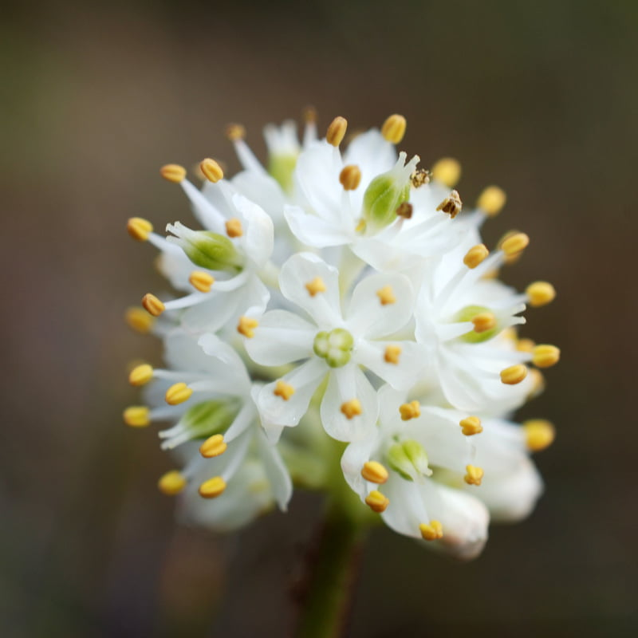
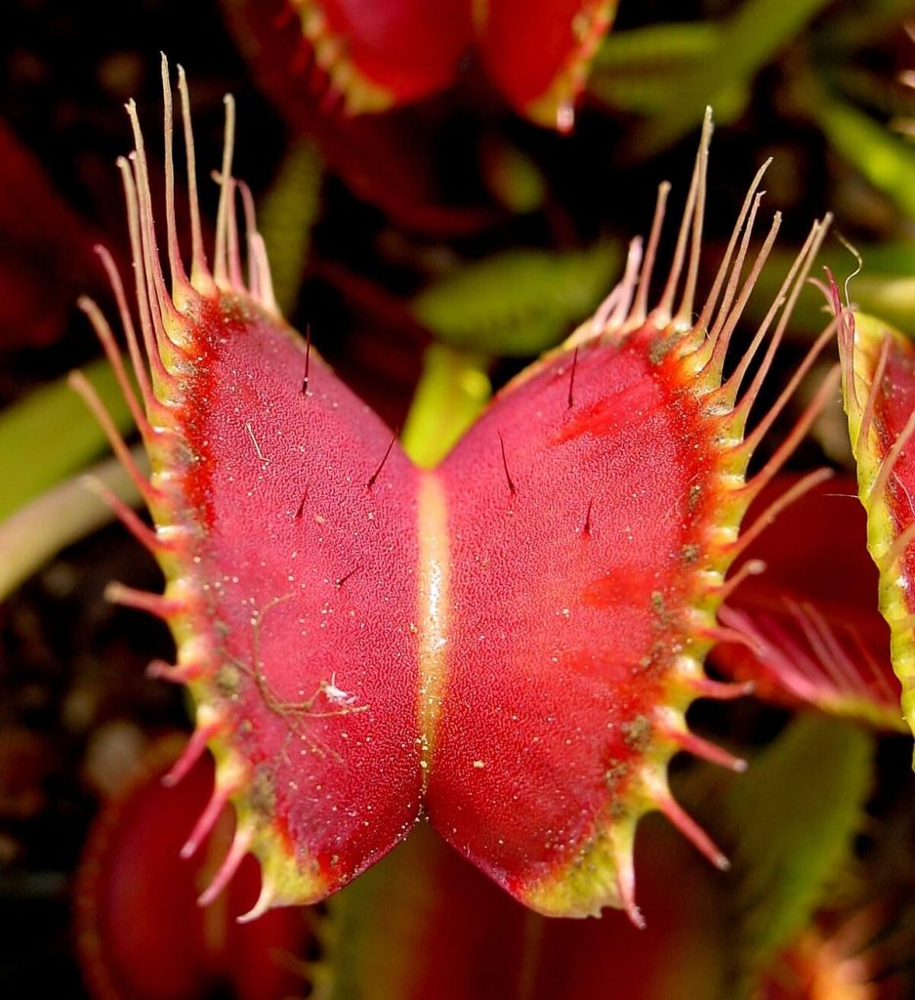
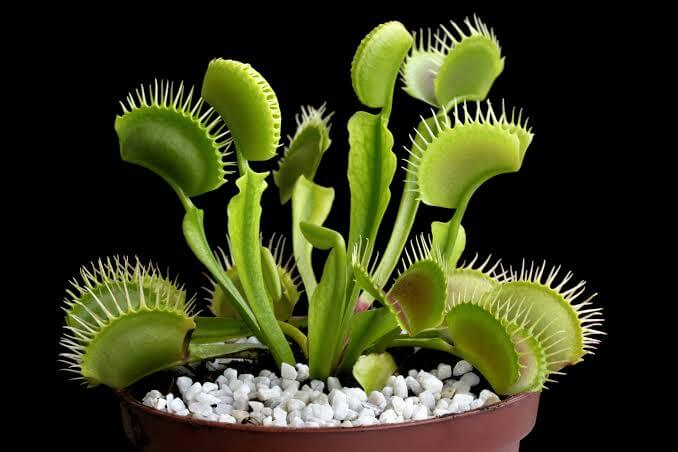
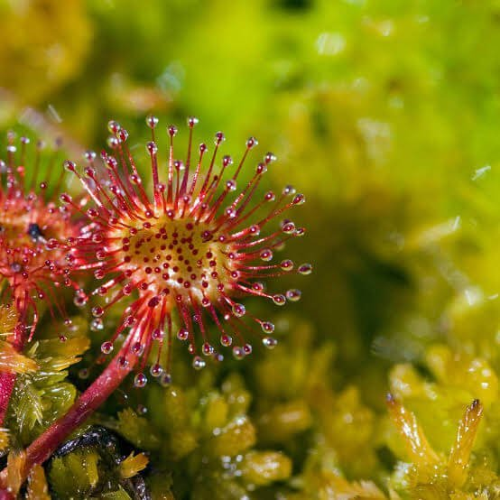
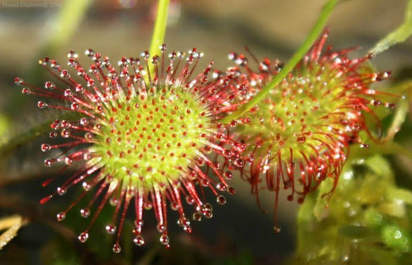

False asphodel လို့ အမည်ရတဲ့ ဒီအပင်ဟာ မြောက်အမေရိက တိုက်ရဲ့ အနောက်ခြမ်းက မြင့်မားတဲ့ တောင်ကုန်း တောင်တန်းတွေပေါ်မှာ အလေ့ကျ ပေါက်လေ့ရှိတဲ့ အပင် ဖြစ်ပါတယ်။ (မှတ်ချက်။ Asphodel မှာ Lily ပန်း ဖြစ်ပြီး မြန်မာလို နှင်းပန်း ဟုလဲ ခေါ်လေ့ ရှိပါတယ်။ ယခု False Asphodel မှာ ၎င်း နှင်းပန်းနှင့် သက်ဆိုင်ခြင်း မရှိပဲ သီးသန့် မျိုးစိတ်တစ်ခု ဖြစ်ပါတယ်)။ ဒီအပင်က အစိမ်းရောင် ရိုးတန်ရှည်ရှည် လေးတွေနဲ့ လှပတဲ့ အဖြူရောင် ပန်းပွင့်လေးတွေ ပွင့်လေ့ ရှိပါတယ်။ အမေရိကတိုက် အနောက်ခြမ်း အလာစကာ ကနေ ကာလီဖိုးနီးယားထိ ဒေသက တောင်ကုန်း တောင်တန်းတွေ ပေါ်မှာ ပေါက်လေ့ ရှိပါတယ်။
ဒီအပင်ဟာ အသားစားတဲ့ အပင်ဖြစ်တယ် ဆိုတာကို British Columbia တက္ကသိုလ်က ရုက္ခဗေဒ ပညာရှင် (ကွမ်ရှီ လင်း) Qianshi Lin က ရှာဖွေ တွေ့ရှိခဲ့တာပဲ ဖြစ်ပါတယ်။ သူက သူ့ကျောင်းသား တစ်ယောက် ဒီအပင်နဲ့ ပါတ်သက်ပြီး ပြောတာ ကြားမိရာကနေ စုံစမ်းစစ်ဆေးဖို့ အကြံဖြစ်လာ ရတာပါ။ အဲ့ဒီကျောင်းသားက ဒီအပင်ရဲ့ ပန်းပွင့်မှာ တချို့ အသားစား အပင်တွေမှာလို့ စေးကပ်တဲ့ အတက်ကလေးတွေ ရှိတယ် လို့ ပြောပါတယ်။ ဒီလို စေးကပ်တဲ့ အတက်ကလေးတွေက အသားစား အပင်တွေမှာ ရှိတတ်ပြီး ပိုးကောင် မွှားကောင်တွေ လာထိမိရင် ကပ်နေအောင် တည်ဆောက်ထားတာ ဖြစ်ပါတယ်။

ရှားပါးတဲ့ အသားစား အပင်မျိုးစိတ်
လင်းရဲ့ သုတေသန ပြုချက်အရ ဒီအပင် တကယ်ပဲ ပိုးကောင်မွှားကောင်တွေကို ဖမ်းယူစားသောက်တဲ့ အသားစား အပင်တစ်မျိုး ဖြစ်တယ်ဆိုတာ သိရှိရပါတယ်။ ဒီအပင်ရဲ့ အရွက်တွေမှာ ရှိနေတဲ့ နိုက်ထရိုဂျင်ရဲ့ သုံးပုံ နှစ်ပုံလောက်ဟာ ပိုးကောင်မွှားကောင် တွေဆီက ရတဲ့ နိုက်ထရိုဂျင် ဖြစ်နေပါတယ်။ ဒီတွေ့ရှိချက်ကို သူက Proceedings of the National Academy of Sciences ဂျာနယ်မှာ တင်ပြခဲ့ပါတယ်။ ဒီတွေ့ရှိချက်ဟာဆိုရင် ၁၂ ခုမြောက် အသားစား အပင်မျိုးနွယ်ကို ရှာဖွေတွေ့ရှိခြင်းပဲ ဖြစ်ပါတယ်။ပညာရှင်တွေကို အံ့အားသင့် စေတာကတော့ ဒီ အသားစား အပင်မျိုးစိတ်ပါဝင်တဲ့ မျိုးနွယ်စုက အခြားအပင်တွေမှာ ဒီအပင်လို အသားစားတဲ့ လက္ခဏာ မတွေ့ရ တာပါပဲ။ နောက်ပြီး အခြား အသားစား အပင်တွေနဲ့ မတူပဲ ထူးခြားတာကတော့ သူ့မှာပါတဲ့ စေးကပ်တဲ့ အမွှေးလေးတွေက အလွန် သေးတာပဲ ဖြစ်ပါတယ်။ အခြားအသားစား အပင်တွေက စေးကပ်တဲ့ အမွှေးတွေလို ထူထဲကြီးမားပြီး ထင်ရှားတာမျိုး မဟုတ်ပဲ တိုတိုလေးတွေ ဖြစ်နေတာပါပဲ။ နောက်ပြီး အပင်ရဲ့ အပွင့်ရိုးတံမှာပဲ စေးကပ်တဲ့ အမွှေးလေးတွေ ရှိနေပါတယ်။
ဒီအပင်ပေါက်တဲ့နေရာဟာ မြင့်မားပြီး မြေဩဇာ ညံ့ဖြင်းတဲ့ အရပ်ဒေသမျိုးတွေမှာ ပေါက်တာ ဖြစ်ပါတယ်။ ဒီလို မြေဩဇာ ညံ့ဖျင်းတော့ အသက်ရှိင်ဖို့ ပိုးမွှားတွေ စားသောက်ပြီး အသက်ရှင်နိုင်တဲ့ စွမ်းဆောင်ရည် ဖြစ်ပေါ်လာတာ ဖြစ်တယ်လို့ ယူဆရပါတယ်။ ဒီအပင်ရဲ့ အမွှေးလေးတွေက အရမ်းသေးငယ်တော့ ပိုးကောင် မွှားကောင် သေးသေးလေးတွေကိုပဲ ဖမ်းစားနိုင်ပါတယ်။
ဒီအပင် ပေါက်တဲ့ ကာလကလဲ တိုတောင်းလှပါတယ်။ မေလမှာ အပင်သစ်လေးတွေ ပေါက်လာပြီး ဇွန်/ဇူလိုင် လလောက်ညှိုးဆို အစေ့ထွက်လာပြီး ညှိုးနွမ်းသွားပါတော့တယ်။
ဂျာမနီ နိုင်ငံ Botanische Staatssammlung München တက္ကသိုလ်က ရုက္ခဗေဒ ပညာရှင် အန်ဒရီယာ ဖလက်ရှ်မန်း (Andreas Fleischmann) ကတော့ ဒီအပင်ကို အလွယ်တကူ အသားစား အပင်လို့ အမျိုးအစား သတ်မှတ်တာကို သိပ်လက်ခံချင်ပုံ မရပါဘူး။ သူကတော့ ဒါဟာ အသားစားဖို့ ရည်ရွယ်ချက် ဆိုတာထက် “မိမိကိုယ်ကို ခုခံကာကွယ်မှုအတွက် သတ်ဖြတ်ခြင်း” လို့ အဓိပ္ပါယ် သတ်မှတ်ပါတယ်။ ဘာကြောင့်လဲဆိုတော့ ဒီ စေးကပ်တဲ့ အမွှေးတိုတိုလေးတွေဟာ မျိုးပွားခြင်းကို အထောက်အကူ မပြုတဲ့ ပိုးမွှားကောင် သေးသေးလေးတွေ မလာအောင် တားဆီးပေးတာကြောင့်မို့ လို့ သူက ထောက်ပြပါတယ်။
“အပင်တစ်ပင်ကို အသားစား အပင်လို့ သတ်မှတ်ဖို့ အဓိက အချက်က သူ့မှာ ပိုးမွှားတွေကို သတ်နိုင်တဲ့ အစွမ်း ရှိမရှိနဲ့ မဆုံးဖြတ် သင့်ပါဘူး။ အဓိကက ဒီပိုးမွှားတွေကို ရောက်လာအောင် ဆွဲဆောင်နိုင်တဲ့ ဂုဏ်သတ္တိတွေ ရှိမရှိနဲ့ ဆုံးဖြတ်သင့်ပါတယ်။ အခု ဒီ အမွှေးတိုလေးတွေက ပိုးမွှားတွေ အတွက် လုံလောက်တဲ့ ဆွဲဆောင်မှုမျိုး ဖြစ်မဖြစ်က သိပ်မသေခြာပါဘူး” လို့ သူက ပြောပါတယ်။
အသားစား အပင်၏ လျှို့ဝှက်ချက်အား ဖော်ထုတ်ခြင်း
အပင်တစ်ပင်ကို အသားစား အပင်လို့ သတ်မှတ်ဖို့က ထင်သလောက်တော့ မလွယ်ကူပါဘူး။ ဒါကို သက်သေပြဖို့ ပထမဆုံး ယင်ကောင် ၁၅၀ ကို ဖမ်းရပါတယ်။ ပြီးတော့ သူတို့ကို N-15 နိုက်ထရိုဂျင် အိုက်ဆိုတုပ်ပါဝင်တဲ့ အထူး အစားအစာတွေ ကျွေးရပါတယ်။ ဒီနိုက်ထရိုဂျင်က ဒီတော့ ယင်ကောင်တွေရဲ့ ကိုယ်ခန္ဓာထဲ ရောက်သွားပါတယ်။ ပြီးလဲပြီးရော ခုနက အသားစား အပင်လို့ ယူဆရတဲ့ အပင် ၂၅ ပင်ရဲ့ အမွှေးတွေ ပေါ်ကို ဒီယင်ကောင်တွေ သွားကပ်ထားလိုက်ပါတယ်။ နောက် သီတင်းပတ် နည်းငယ် အကြာမှာတော့ သိပ္ပံပညာရှင်တွေဟာ ခနက အပင်တွေကို သွားရိတ်သိမ်းလာပါတယ်။ဒီ့နောက် ဓါတ်ခွဲခန်းထဲမှာ ဒီအပင်တွေရဲ့ ဓါတုဗေဒ ဖွဲ့စည်းပုံကို လေ့လာကြည့်ကြပါတယ်။ အဓိကကတော့ ခုနက ယင်ကောင်တွေက N-15 နိုက်ထရိုဂျင် ဒီအပင်တွေမှာ ရှိမရှိ ကြည့်တာပါ။ အကယ်လို့ N-15 နိုက်ထရိုဂျင်ကို တွေ့မယ် ဆိုရင် ဒီအပင်တွေဟာ ယင်ကောင်တွေကို ခြေဖျက်ပြီး သူတို့ရဲ့ အသားကို စားသုံးလိုက်တယ်လို့ ယူဆလို့ ရမှာ ဖြစ်ပါတယ်။
ဓါတ်ခွဲစမ်းသပ်ချက်အရ အပင်ရဲ့ နိုက်ထရိုဂျင်ရဲ့ ၆၄ ရာခိုင်နှုန်းဟာ N-15 တွေ ဖြစ်နေတယ် ဆိုတာကို တွေ့ရှိရပါတယ်။
နောက်ပြီး စေးကပ်တဲ့ အမွှေးတွေကို ဓါတ်ခွဲကြည့်တော့လဲ အခြား အသားစား အပင်တွေမှာ တွေ့ရလေ့ရှိတဲ့ phosphatase အင်ဇိုင်းကို တွေ့ရပါတယ်။ ဒီအင်ဇိုင်းက ပိုးကောင်တွေရဲ့ အသားတွေကို ခြေဖျက်တဲ့ နေရာမှာ အသုံးပြုတဲ့ အင်ဇိုင်းဖြစ်ပါတယ်။
အခုတွေ့ရှိချက်က ကျွန်တော်တို့ ကမ္ဘာပေါ်က အနားပါတ်ဝန်းကျင်က အပင်တွေနဲ့ ပါတ်သက်လို့ သိစရာတွေ အများကြီး ကျန်သေးတယ် ဆိုတာကို ပြနေတာပဲ ဖြစ်ပါတယ်။
“ကျွန်တော်တို့ အနေနဲ့ ပိုပြီး စူးစမ်းလိုစိတ် ရှိတဲ့ ရုက္ခဗေဒ ပညာရှင်တွေ ပိုမို လိုအပ် နေပါတယ်” လို့ National University Malaysia က ပညာရှင် ဟိုဟန်ဂို (Hoe-Han Goh) က ပြောပါတယ်။
ရှာဖွေတွေ့ရှိခဲ့သူ လင်း ကတော့ “ဒါဟာ ကျွန်တော်တို့ ပတ်ဝန်းကျင်မှာ အသားစား အပင်မျိုးစိတ်တွေ အများအပြား ရှိနေသေးတယ် ဆိုတာက ပြသနေတာပဲ ဖြစ်ပါတယ်” လို့ ပြောကြားခဲ့ပါတယ်။



